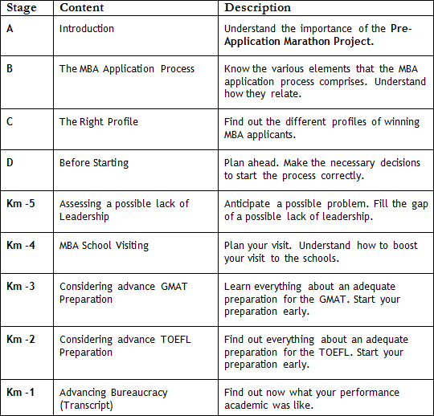

I do. As you can probably imagine, I have many doubts.


You too can probably imagine that after 13 years supporting applicants in the application process, I can point out what are the most common doubts of those who start an international MBA Project.

Actually, I am a bit ahead, I guess. Doesn’t it matter if I will apply only next year?
On the contrary, beginning to plan for the MBA one year before applying will allow you to address any possible gaps.
That is my plan. Even before I start the GMAT/TOEFL preparation, I would like to understand the process better and to know whether I have the profile of a strong applicant.
Nicholas, to fulfill this need of yours and other applicants, I put together a kind of Pre-Application Marathon Project.
What is this “Project” about?
Most of the mistakes made by applicants happen because they do not understand the importance of various phases of this complex Project. The Pre-Application Marathon Project was designed to enable you to follow a series of recommendations of actions with a lot of anticipation.
I would guess that any mistakes now should bring consequences later on.
It is important not to skip phases. Follow these dialogues:

Neat, one of my concerns now is to understand whether my stories of leadership are enough for me to earn admission at a Top-5 American b-school.
That is a quite common doubt. We will discuss how the applicant can, at this moment, address any gaps related to leadership. We will also discuss whether it is worth engaging in a social activity now that you are about to begin the MBA application process.
I like that. I can see that we will find out if I have an adequate profile (Stage C).
Yes, we will talk about the main profiles of admitted applicants.
Awesome. What about the services that Megaron offers?
To know what we offer, you must understand the process. One thing at a time…
Ok. I am ready.
Click on “Stage B. The MBA Application Process” and follow our chat. Keep running.